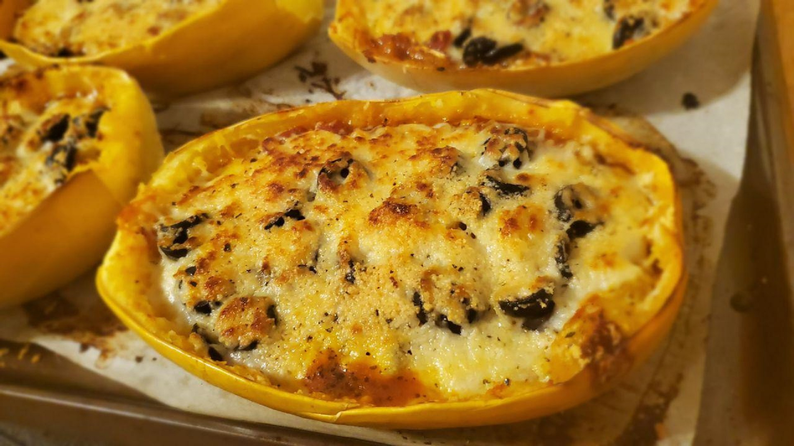

Baked Spaghetti Squash Lasagna Style

Description
This spaghetti squash recipe is an alternative to bland old spaghetti squash. It resembles baked rigatoni and lasagna.
Ingredients
- 1 spaghetti squash, halved lengthwise and seeded
- 1 onion, chopped
- 2 tablespoons minced garlic
- 2 (14 ounce) cans stewed tomatoes
- 1 tablespoon dried basil
- 1 cube vegetable bouillon
- black pepper to taste
- 1 (15 ounce) can black olives, chopped
- 1 cup shredded mozzarella cheese
- 1 cup shredded Parmesan cheese
Steps
- Preheat the oven to 325 degrees F (165 degrees C).
- Spray a baking sheet with a thin layer of cooking spray. Place squash halves cut-side down on the baking sheet.
- Bake squash in the preheated oven until a knife can be easily inserted, about 35 minutes. Remove from the oven and let cool.
- Grease a nonstick saucepan with cooking spray and place over medium heat. Sauté onion and garlic until golden brown. Stir in tomatoes, basil, bouillon cube, and black pepper. Cook until thickened, about 15 minutes.
- Remove squash strands with a fork, reserving shells. Layer each half with a spoonful of sauce, a layer of spaghetti squash strands, olives, and mozzarella cheese. Repeat layers until shells are full or until all ingredients are used. Top with Parmesan cheese.
- Bake in the preheated oven until Parmesan cheese melts, about 20 minutes.
Nutrition Facts
Per Serving: 280 calories; protein 14.1g; carbohydrates 24.5g; fat 15.9g; cholesterol 26.7mg; sodium 1294.5mg.